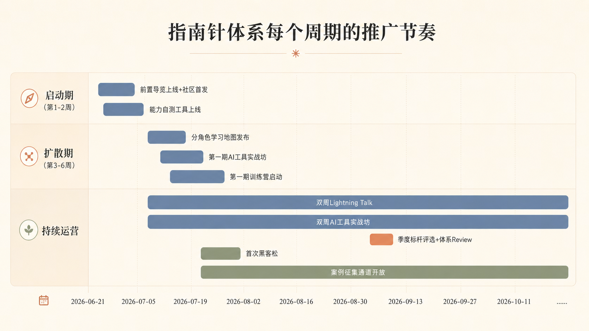

在日常工作触点里自然露出。
如何推广
让 AI DRI 指南针被看见、被理解、被实践、被共建
这不是一份静态说明书，而是一套持续运营的成长机制，帮助更多同学找到 AI 能力位置，并在真实业务中持续升级。
详见 「如何推广指南针体系」
推广核心逻辑
推广不是一次发布，而是一条持续运营链路。
快速知道体系讲什么、和自己有什么关系。
用自测、案例和训练营进入真实业务。
让用户感受到能力提升和落地帮助。
随着案例、技术和反馈持续更新。
为什么做
AI 能力建设最难的，不是知道 AI 重要。
真正难的是不知道从哪里开始、如何判断进步、怎样把能力用回业务。指南针希望帮助大家回答：我现在处在哪个阶段、下一步补什么、如何回到自己的业务场景。
看见它
第一步，让更多人看见它
把指南针导览加入新人 onboarding、内部社区首发帖、团队周会快讲、飞书机器人定期推送，以及训练营报名页能力维度标注。
理解它
第二步，让大家快速理解它
用「核心概念」「能力地图」「常见误区」做前置导览；上线首月安排 2-3 场 30 分钟宣讲，讲清体系为什么存在、怎么使用、和不同岗位有什么关系。
相信它
第三步，让大家相信它
体系被信任，不是因为写得完整，而是因为用户能亲身体验到它对能力提升和业务实战有帮助。入口可以从首页的 AITI 人格自测开始。
一起迭代
第四步，让体系持续自我迭代
通过署名露出、标杆评选、Buddy 积分和共建者身份，让贡献变成可见收益；再用季度小迭代和半年大版本保持体系更新。
推广节奏建议
从启动、扩散到持续运营，把指南针变成长期可复用的组织能力。
